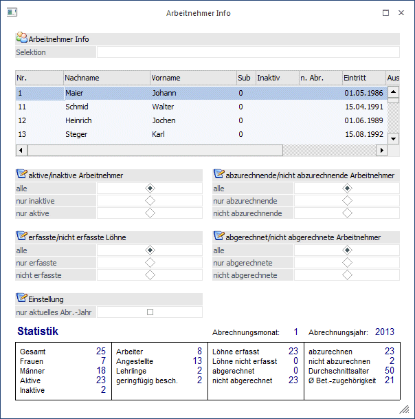
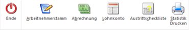

Der Programmpunkt Arbeitnehmer-Info enthält eine Reihe von wichtigen Informationen und kann als Ausgangspunkt für verschiedene Aktionen verwendet werden.

Im ersten Feld kann eine Einschränkung der AN vorgenommen werden, die in der nachfolgenden Tabelle angezeigt werden sollen. Dieses Feld hat die gleiche Funktion wie der Matchcode - es werden alle AN angezeigt, die dem Suchbegriff entsprechen.
Ø Auswahl
Durch Anwahl der verschiedenen Radiobuttons wird entschieden, welche Arbeitnehmer in der obenstehenden Tabelle angezeigt werden.
Folgende Möglichkeiten stehen zur Verfügung:
Ø aktive/inaktive Arbeitnehmer
ü alle
Es werden alle
Arbeitnehmer angezeigt.
ü nur inaktive
Es werden nur AN
angezeigt, bei denen die Checkbox Inaktiv im AN-Stamm aktiviert wurde.
ü nur aktive
Es werden auch jene
AN angezeigt, bei denen das Aktiv-Kennzeichen deaktiviert wurde.
Ø abzurechnende/nicht abzurechnende Arbeitnehmer
ü alle
Es werden alle
Arbeitnehmer angezeigt.
ü nur anzurechnende
Es werden
jene AN angezeigt, bei denen das "nicht abrechnen"-Kennzeichen nicht aktiviert
ist.
ü nur nicht abzurechnende
Es
werden nur AN angezeigt, bei denen die Checkbox "nicht abrechnen" im AN-Stamm
aktiviert wurde.
Ø erfasste/nicht erfasste Löhne
ü alle
Es werden alle
Arbeitnehmer angezeigt.
ü Löhne erfasst
Es werden alle
Arbeitnehmer angezeigt, für die schon Bezüge im laufenden Abrechnungsmonat
erfasst wurden.
ü Löhne nicht erfasst
Es werden
alle Arbeitnehmer angezeigt, für die im laufenden Abrechnungsmonat noch keine
Bezüge erfasst wurden.
Ø abgerechnete/nicht abgerechnete Arbeitnehmer
ü alle
Es werden alle
Arbeitnehmer angezeigt.
ü Abgerechnet
Es werden alle
Arbeitnehmer angezeigt, die im laufenden Abrechnungsmonat abgerechnet
wurden.
ü nicht abgerechnet
Es werden
alle Arbeitnehmer angezeigt, die im laufenden Abrechnungsmonat noch nicht
abgerechnet wurden.
Die einzelnen Optionen wirken additiv - dadurch können alle möglichen Kombinationen der Anzeige erreicht werden. Durch Änderung der Option wird die darüberstehende Tabelle sofort aktualisiert.
Ø nur aktuelles Abr.-Jahr
Wenn diese Option aktiviert ist, dann werden AN für die Berechnungen für die Statistik nur aus dem aktuellen Jahr berücksichtigt (die AN, die im aktuellen Jahr eine Abrechnung aufweisen).
In der Tabelle werden alle AN angezeigt, die dem Suchbegriff und der nebenstehenden Einstellung entsprechen. Wenn die Spaltenüberschriften der Tabelle angeklickt werden (gilt für die Felder Nr., Nachname und Vorname), kann nach dem entsprechenden Inhalt sortiert werden. Der schwarze Pfeil neben der Bezeichnung weist auf die Sortierreihenfolge hin. Durch einen Doppelklick auf den gewünschten AN wird dieser im Fenster "Arbeitnehmer-Stammdaten" geöffnet.
Buttons

Über die Buttons kann eine Reihe von Funktionen aufgerufen werden:
Ø Ende
Durch Drücken des Buttons "Ende" bzw. der Taste ESC wird der Programmbereich geschlossen und vorgenommene Einstellungen verworfen.
Ø Arbeitnehmerstamm (ALT + A)
Durch Anklicken des Buttons Arbeitnehmerstamm kann der AN im AN-Stamm bearbeitet werden.
Ø Abrechnung (ALT + B)
Durch Anklicken des Buttons Abrechnung wird der gewählte AN im Abrechnungsfenster geöffnet.
Ø Lohnkonto (ALT + L)
Durch Anklicken des Buttons Lohnkonto wird das Jahreslohnkonto des AN angezeigt.
Ø Austrittscheckliste (ALT + C)
Durch Anklicken des Buttons Austrittscheckliste wird die Checkliste für einen Austritt aufgerufen.
Ø Statistik Drucken (ALT + S)
Durch Anklicken des Buttons Statistik Drucken kann eine Statistik aller abgerechneten AN ausgegeben werden.
Informationen - Statistik
Ø Abrechnungsmonat
Hier wird das aktive Abrechnungsmonat angezeigt.
Ø Abrechnungsjahr
Hier wird das aktuelle Abrechnungsjahr angezeigt.
Ø Statistik
Bei der Statistik werden die Anzahl der gesamten Arbeitnehmer und die Aufschlüsselung in Männer und Frauen, in Lehrlinge, Arbeiter, Angestellte und geringfügig Beschäftigte und in aktive und inaktive angezeigt.
Zusätzlich erhalten Sie noch die Information über die Anzahl der bereits erfassten Arbeitnehmer, der bereits abgerechneten und der noch abzurechnenden Arbeitnehmer. Dazu ist dann auch noch das Durchschnittsalter aller aktiven AN und die durchschnittliche Betriebszugehörigkeit aller aktiven AN in Jahren ersichtlich
Durch Drücken der ESC-Taste wird das Fenster geschlossen.